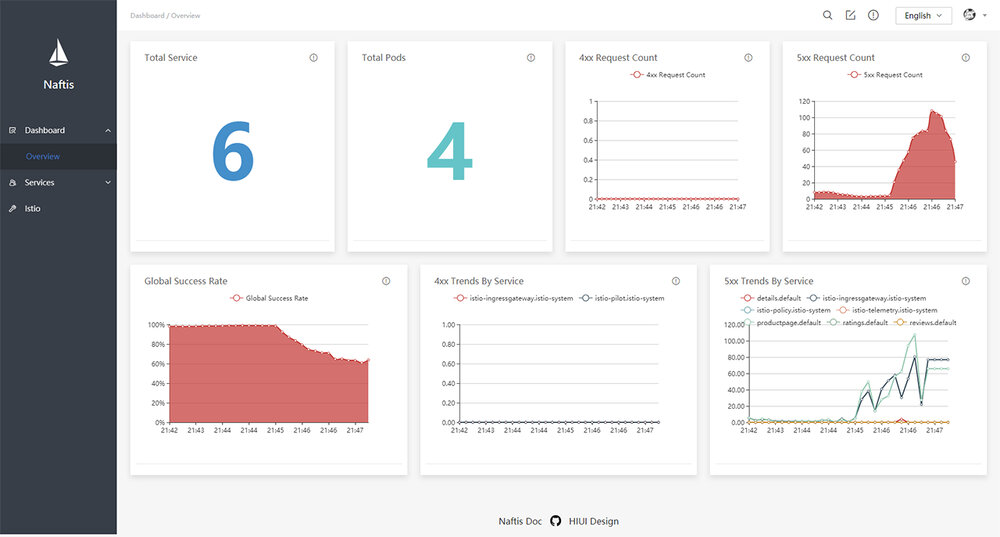
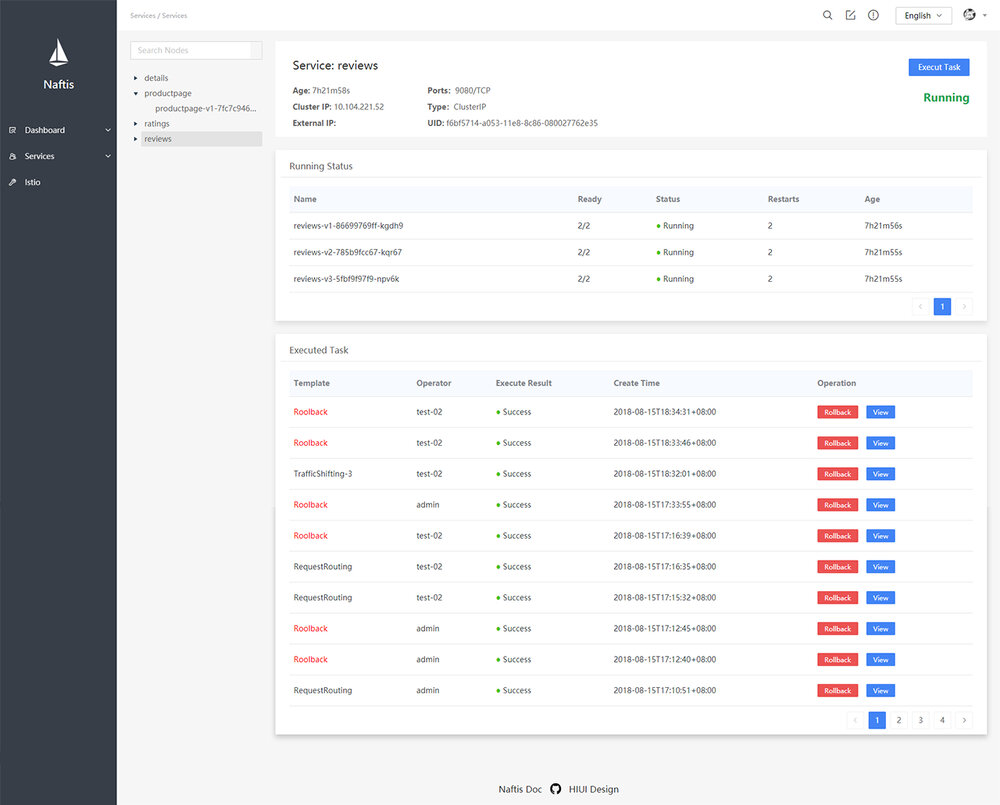
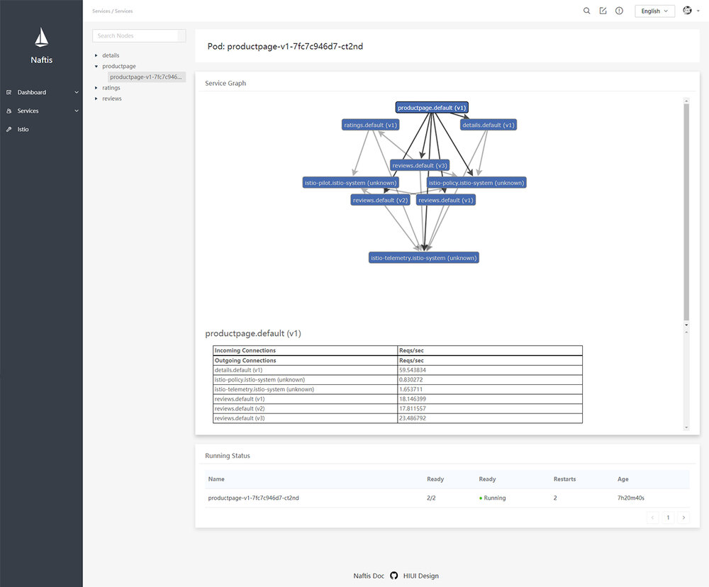
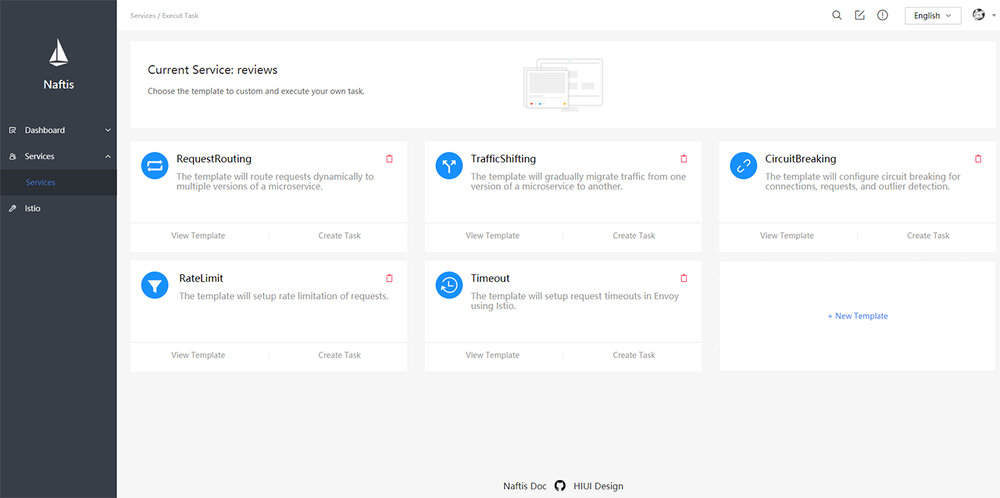
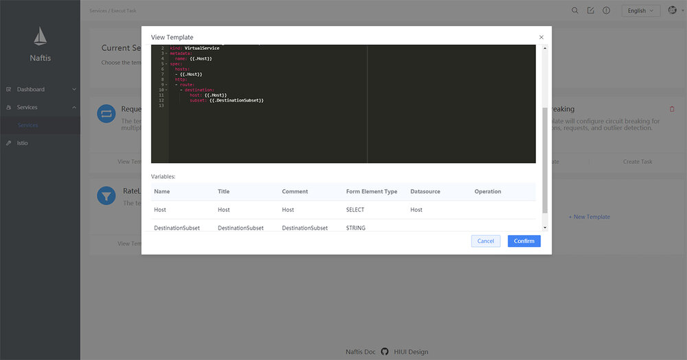
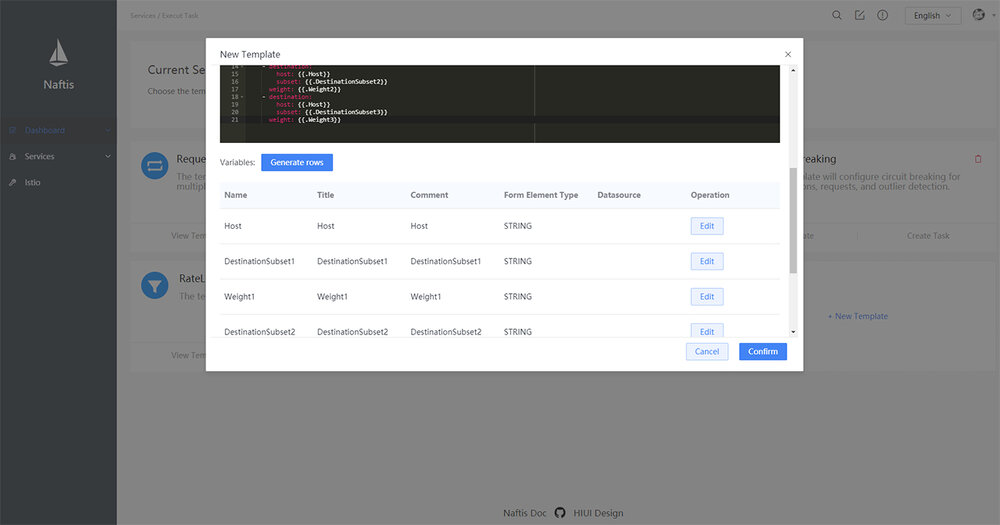
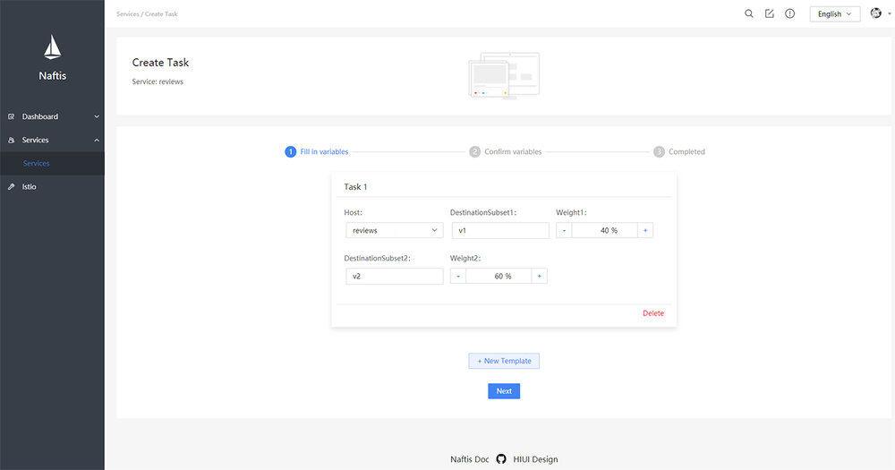
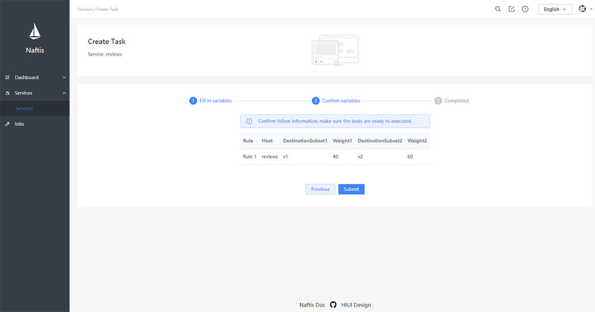
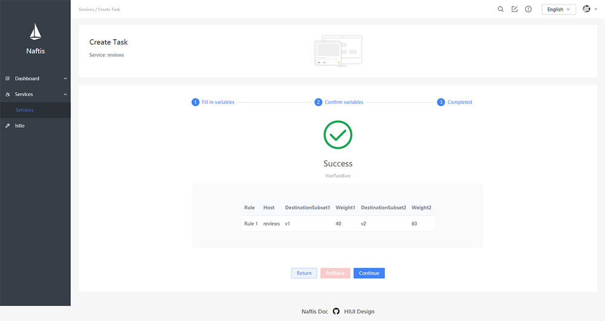
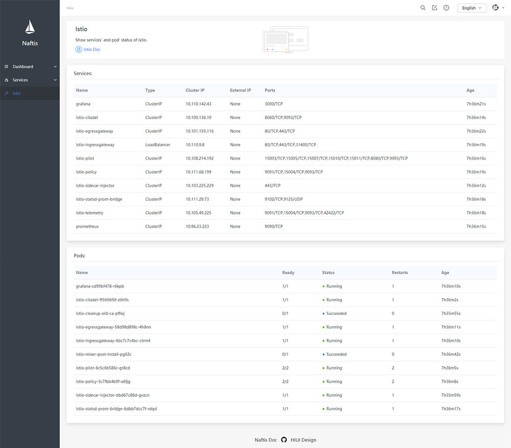

用Istio治理服务时须通过istioctl或kubectl，这种方式可能存在一些问题。因此小米武汉研发中心推出Naftis，帮助用户更轻松地管理Istio。
近年来服务网格（Service Mesh）已成为各大公司关注重点，各大公司纷纷开始调研Service Mesh相关架构。作为Service Mesh中的佼佼者，Istio诞生之初就已吸引众多目光。
作为基础设施层，Istio有优秀的服务治理能力。但使用Istio进行服务治理时，开发者需通过istioctl或kubectl工具在终端中进行操作，这种方式目前存在一些问题，举例如下：
- Istio要求用户熟练掌握istioctl工具的数百种指令，有较高的学习成本。
- Istio进行服务治理时需要的yaml配置文件的数量非常庞大，如何配置和管理这些配置文件，也是个难题。
- Istio的istioctl工具没有用户权限的约束，存在一定安全隐患，无法适应大公司严格的权限管理需求。
- Istio的istioctl工具不支持任务回滚等需求，在执行任务出错的情况下，无法快速回滚到上一个正确版本。
为了解决这些问题，小米信息部武汉研发中心为Istio研发出了一套友好易用的Dashboard - Naftis。
Naftis意为水手，和Istio（帆船）意境契合。作为dashboard，Naftis能使用户像水手一样熟练掌控和管理Istio。
https://github.com/XiaoMi/naftis
Naftis通过任务模板的方式来帮助用户更轻松地执行Istio任务。用户可以在 Naftis中定义自己的任务模板，并通过填充变量来构造单个或多个任务实例，从而完成各种服务治理功能。
Naftis提供了如下特性：
- 集成了一些常用的监控指标，包括40X、50X错误趋势等。
- 提供了可定制的任务模板的支持。
- 支持回滚指定某一任务。
- 提供了Istio状态诊断功能，可实时查看Istio的Services和Pod状态。
- 开箱即用，通过kubectl指令一键部署。
依赖
目前Naftis仅支持Kubernetes，不支持其他容器调度平台。
- Istio > 1.0
- Kubernetes>= 1.9.0
- HIUI >= 1.0.0
Naftis后端采用Go编写，通过Kubernetes和Istio的CRD接口对Istio资源进行操作； 前端则采用了同样由小米开源的基于React的前端组件 HIUI，HIUI简洁优雅，有一定React基础的前端开发者能迅速上手：
https://github.com/XiaoMi/hiui
快速开始
kubectl create namespace naftis && kubectl apply -n naftis -f mysql.yaml && kubectl apply -n naftis -f naftis.yaml
# 通过端口转发的方式访问Naftis
kubectl -n naftis port-forward $(kubectl -n naftis get pod -l app=naftis-ui -o jsonpath='{.items[0].metadata.name}') 8080:80 &
# 打开浏览器访问 http://localhost:8080，默认用户名和密码分别为admin、admin。
详细的部署流程
Kubernetes集群内运行
# 创建Naftis命名空间
$ kubectl create namespace naftis
# 确认Naftis命名空间已创建
$ kubectl get namespace naftis
NAME STATUS AGE
naftis Active 18m
# 部署Naftis MySQL服务
$ kubectl apply -n naftis -f mysql.yaml
# 确认MySQL已部署
NAME READY STATUS RESTARTS AGE
naftis-mysql-c78f99d6c-kblbq 1/1 Running 0 9s
naftis-mysql-test 1/1 Running 0 10s
# 部署Naftis API和UI服务
kubectl apply -n naftis -f naftis.yaml
# 确认Naftis所有的服务已经正确定义并正常运行中
kubectl get svc -n naftis
NAME TYPE CLUSTER-IP EXTERNAL-IP PORT(S) AGE
naftis-api ClusterIP 10.233.3.144 <none> 50000/TCP 7s
naftis-mysql ClusterIP 10.233.57.230 <none> 3306/TCP 55s
naftis-ui LoadBalancer 10.233.18.125 <pending> 80:31286/TCP 6s
kubectl get pod -n naftis
NAME READY STATUS RESTARTS AGE
naftis-api-0 1/2 Running 0 19s
naftis-mysql-c78f99d6c-kblbq 1/1 Running 0 1m
naftis-mysql-test 1/1 Running 0 1m
naftis-ui-69f7d75f47-4jzwz 1/1 Running 0 19s
# 端口转发访问Naftis
kubectl -n naftis port-forward $(kubectl -n naftis get pod -l app=naftis-ui -o jsonpath='{.items[0].metadata.name}') 8080:80 &
# 打开浏览器，访问 http://localhost:8080 即可。默认用户名和密码分别为admin、admin。
本地运行
数据移植
# 执行sql语句
mysql> source ./tool/naftis.sql;
# 将in-local.toml中的数据库的DSN配置替换成本地数据库实例的DSN。
启动API服务
- Linux
make build && ./bin/naftis-api start -c config/in-local.toml
或
./run
- Mac OS
GOOS=darwin GOARCH=amd64 make build && ./bin/naftis-api start -c config/in-local.toml
或
GOOS=darwin GOARCH=amd64 ./run
配置Nginx代理
cp tool/naftis.conf <your-nginx-conf-directory>/naftis.conf
# 酌情修改naftis.conf文件并reload nginx
启动前端Node代理
cd src/ui
npm install
npm run dev
# 打开浏览器访问 http://localhost:5200。
预览
Dashboard
Dashboard页面集成了一些常用的图表，比如请求成功率、4XX请求数量等。

服务管理
服务详情
服务详情页面可以查看查看已部署到Kubernetes中服务信息。

服务Pod和拓扑图等
服务详情页面可以查看指定服务Pod和拓扑图等信息。

任务模板管理
任务模板列表
任务模板列表也可以查看已经添加好的任务模板卡片列表。

查看指定模板
点击“查看模板”可以查看指定模板信息。

新增模板
点击“新增模板”可以向系统中新增自定义模板。

创建任务
初始化变量值。

确认变量值。

提交创建任务的分步表单。

Istio诊断
Istio诊断页面可以查看Istio Service和Pod状态。

Docker镜像
Naftis的API和UI镜像已经发布到Docker Hub上，见api和ui。
开发者指南
获取源码
go get github.com/xiaomi/naftis
配置环境变量
将下述环境变量添加到~/.profile。我们强烈推荐通过autoenv来配置环境变量。
# 根据环境改变GOOS和GOARCH变量
export GOOS="linux" # 或替换成"darwin"
export GOARCH="amd64" # 或替换成"386"
# 把USER修改成你自己的DockerHub用户名
export USER="sevennt"
export HUB="docker.io/$USER"
如果你使用autoenv，则输入cd .来使环境变量生效。
Go依赖
我们目前使用dep管理依赖。
# 安装dep
go get -u github.com/golang/dep
dep ensure -v # 安装Go依赖
代码风格
其他指令
make # 编译所有 targets
make build # 编译 Go 二进制文件、前端静态资源、Kubernetes清单
make build.api # 编译 Go 二进制文件
make build.ui # 编译前端静态资源
make build.manifest # 编译Kubernetes清单
make fmt # 格式化 Go 代码
make lint # lint Go 代码
make vet # vet Go 代码
make test # 运行测试用例
make tar # 打包成压缩文件
make docker # 编译 docker 镜像
make docker.api # 编译后端 docker 镜像
make docker.ui # 编译前端 docker 镜像
make push # 把镜像推送到 Docker Hub
./bin/naftis-api -h # 显示帮助信息
./bin/naftis-api version # 显示版本信息
./tool/genmanifest.sh # 本地渲染Kubernetes部署清单
./tool/cleanup.sh # 清理已部署的Naftis
其他
Naftis目前已在Github开源 ，目前功能还比较薄弱，希望更多志同道合的朋友一起参与进来共同完善落地Istio生态。